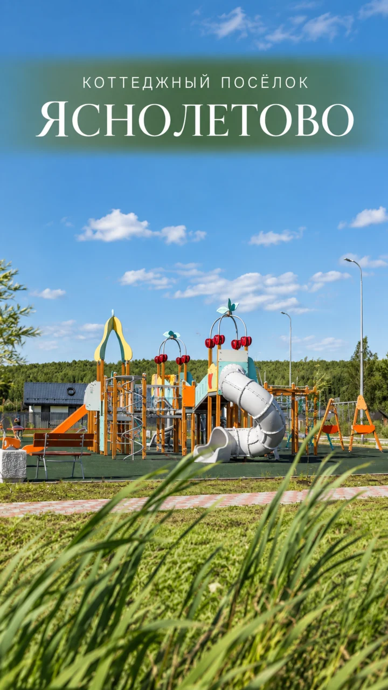
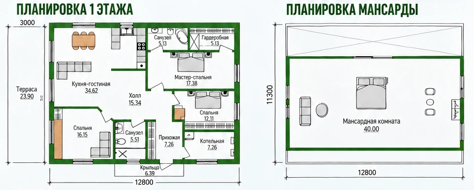
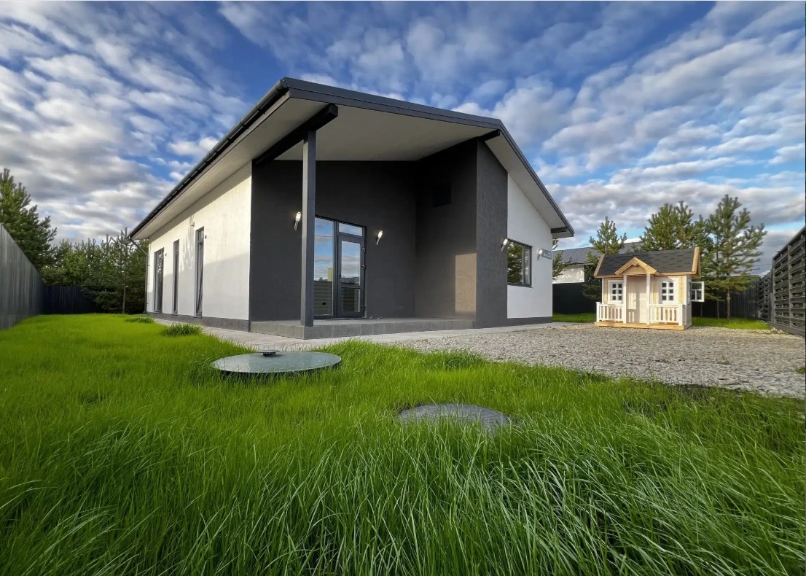
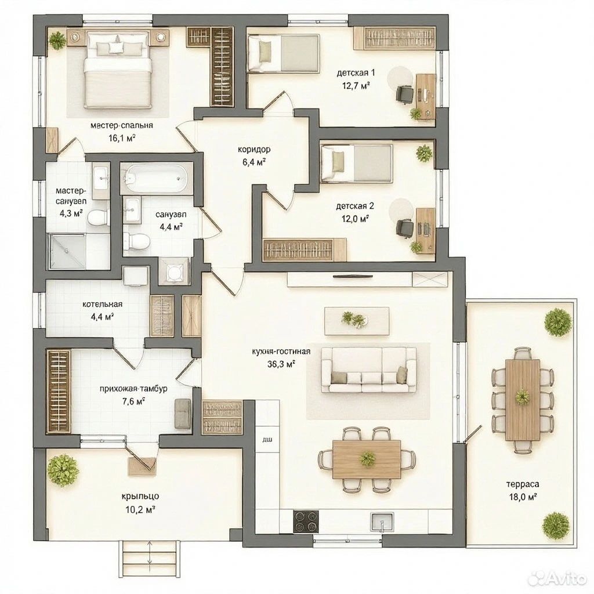

Пригород Екатеринбурга
Дом в
Яснолетово
Три спальни, кухня-гостиная с выходом на террасу и мансарда, которую можно обустроить для отдыха.
14 088 800 ₽
Примерить дом ↓
- Площадь дома
- 196 м²
- Участок
- 7 соток
- Отделка
- White Box
- До ТРЦ «МЕГА»
- ≈ 20 мин
Примерка дома
Какой вариант вам подходит?
Укажите бюджет и пожелания. Сравните готовые дома в Яснолетово и Лесных улочках и проект SHiLO под строительство.
Коттеджный посёлок
Яснолетово
В этом доме хочется поднять глаза… и остаться.
Второй свет, панорамное остекление и ощущение простора, которое сложно передать фотографиями. Здесь гостиная становится сердцем дома — местом, где приятно собираться всей семьёй, встречать друзей и проводить вечера.
Готовый дом в КП «Яснолетово» — направление Московского тракта, 20 минут до ТРЦ «МЕГА».
А ещё здесь есть мансарда 40 м². И это отдельная история!
Домашний кинотеатр? Игровая для детей? Мастерская или место для йоги? Представьте, что для любимого занятия у вас наконец появилась целая комната.
Что ещё предусмотрено для вашей семьи:
196 м² — площадь дома, участок 7 соток.
Дом готов в отделке White Box, под чистовую.
В посёлке — охраняемая территория, асфальтированный подъезд, детская площадка и зоны отдыха.
Стоимость — 14 088 800 ₽.
Мне нравятся дома, в которых есть своя особенность. Здесь это сочетание света, объёма и пространства для увлечений.

Планировка
На первом этаже три спальни, два санузла и котельная. На мансарде — отдельная комната 40 м².

Открыть планировку ↗КП «Зелёные кварталы» · Под строительство
SHiLO 124 м²
Одноэтажный дом в комплектации White Box. Три спальни, включая мастер-спальню со своим санузлом, кухня-гостиная 36,3 м² и терраса 18 м².
12 700 000 ₽
13 800 000 ₽ · Выгода 1 100 000 ₽ до 31 декабря 2026 года.
Расчёт за дом с участком 7,7 сотки. Участки по ул. Тимирязева, 9, 11, 13, 14, 15 и 16. Средняя стоимость участка — 3 300 000 ₽.
Уточнить условия в Telegram ↗
Как воспользоваться акцией
- До 31 декабря заключите основной договор и внесите первый транш. Землю оформляют на покупателя при сделке.
- Если сделка планируется на следующий год, можно до 31 декабря заключить авансовый договор и внести 1 500 000 ₽. Аванс фиксирует стоимость строительства и позволяет закупить материалы.
При авансе цена участка подлежит уточнению на дату сделки. При изменении цены земли итоговая стоимость дома с участком может измениться.
Цены указаны на момент публикации.

Открыть планировку SHiLO ↗Фасад и интерьер
КП «Лесные улочки» · Готовый дом
Дом 141 м²
Три спальни, включая мастер-спальню со своим санузлом. Кухня-гостиная 47,1 м² с выходом на террасу 22,5 м².
16 000 000 ₽
Окончательная цена. Оплата наличными или в ипотеку.
При сделке до 30 ноября 2026 года ремонт планируем завершить до 15 декабря. Можно запланировать переезд к Новому году.

 Открыть планировку ↗
Открыть планировку ↗
Видеообзор дома
Терраса и фасад